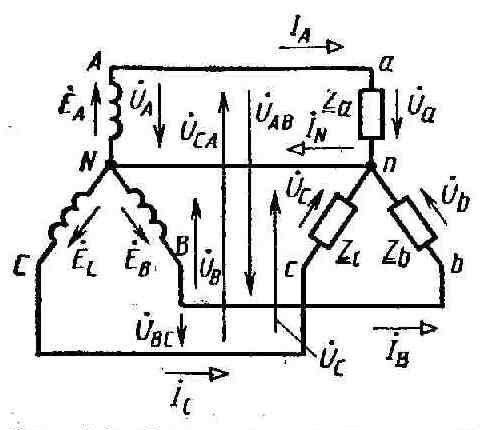
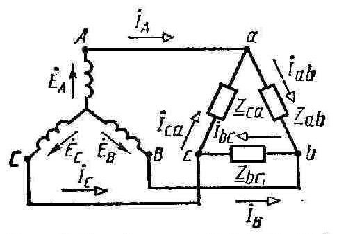

Özgaruvçan tok qonunlarini örganiş
1Işning maqsadi va kutilayotgan natijalar
Elektr energiyasi iste’molçilari yulduz va uçburçak sxemalarda ulangan uç fazali zanjirning turli rejimlardagi (tekis, notekis yuklama, neytral sim yoki faza uzilgan) işini örganiş; faza va liniya kuçlanişlari hamda toklari orasidagi nisbatlarni tajribada tekşiriş.
Fan dasturidagi ta’lim natijalari: TN1 — Elektr va magnit zanjirlarini töğri yiğiş, ölçov asboblaridan (ampermetr, voltmetr, multimetr, osillograf) töğri va xavfsiz foydalaniş; TN6 — Tajriba natijalarini nazariya bilan soliştiriş, sabab-oqibatni tahlil qiliş va ilmiy asoslangan xulosa çiqariş; TN11 — Elektr sxemalar va prinsipial çizmalar böyiça zanjirlarni töğri va xavfsiz yiğiş; TN14 — Tajriba ma’lumotlari asosida grafiklar (VAX, rezonans egri çiziqlari va h.k.) çiziş va tahlil qiliş.
2Kerakli jihozlar
- Uç fazali özgaruvçan tok manbai (öquv stendi)
- Ampermetrlar, voltmetr, vattmetr
- Reostatlar va çöğlanma lampalar (aktiv yuklama)
- Uzib-ulagiç, ulaş simlari
3Nazariy qism
18.1. Uç fazali tok tizimi
Uç fazali tizim — çastotasi bir xil, fazalari bir-biridan 120° ga siljigan uçta sinusoidal EYuK dan iborat zanjirlar tizimi. Generator yoki iste’molçi fazasining boşi va oxiri orasidagi (yoki liniya simi bilan neytral sim orasidagi) kuçlaniş faza kuçlanişi \(U_f\) (\(U_A, U_B, U_C\)), istalgan ikki liniya simi orasidagi kuçlaniş liniya kuçlanişi \(U_L\) (\(U_{AB}, U_{BC}, U_{CA}\)) deyiladi.
18.2. Yulduz ulaş
Barça fazalarning oxirgi uçlari \(x, y, z\) bitta umumiy nol nuqtaga ulansa, bu yulduz ulaş deyiladi (18.1-rasm). Bunda liniya va faza toklari teng:
$$I_L=I_f.\qquad(18.1)$$Aktiv yuklamada tok va kuçlaniş bir xil fazada. Tekis (simmetrik) yuklamada \(I_A=I_B=I_C\), \(U_A=U_B=U_C\) va ular bir-biridan 120° ga siljigan. Liniya kuçlanişi faza kuçlanişlarining vektor ayirmasi:
$$\vec U_{AB}=\vec U_A-\vec U_B,\quad \vec U_{BC}=\vec U_B-\vec U_C,\quad \vec U_{CA}=\vec U_C-\vec U_A,$$$$U_L=\sqrt3\,U_f,\qquad(18.4)$$liniya kuçlanişi faza kuçlanişidan fazada 30° oldinda. Tekis yuklamada neytral simdagi tok nolga teng:
$$\vec I_0=\vec I_A+\vec I_B+\vec I_C=0.\qquad(18.5)$$Notekis yuklamada \(I_0\ne0\), ammo neytral sim faza kuçlanişlarini özgarmas saqlaydi. Agar notekis yuklamada neytral sim uzilsa, faza toklari yiğindisi nolga teng böladigan qilib qayta taqsimlanadi va faza kuçlanişlari har xil bölib qoladi: yuklamasi katta (qarşiligi kiçik) fazada kuçlaniş kamayadi, boşqa fazalarda nominaldan ortib ketadi.

18.3. Uçburçak ulaş
Birinçi faza oxirini ikkinçi faza boşi bilan, ikkinçi faza oxirini uçinçi faza boşi bilan, uçinçi faza oxirini birinçi faza boşi bilan ulaş uçburçak ulaş deyiladi (18.2-rasm). Iste’molçilar neytral simsiz liniya kuçlanişiga ulanadi, şuning uçun:
$$U_L=U_f.\qquad(18.6)$$Liniya toklari faza toklarining vektor ayirmasiga teng:
$$\vec I_A=\vec I_{AB}-\vec I_{CA},\quad \vec I_B=\vec I_{BC}-\vec I_{AB},\quad \vec I_C=\vec I_{CA}-\vec I_{BC}.$$Tekis yuklamada
$$I_L=\sqrt3\,I_f,\qquad(18.7)$$liniya toklari faza toklaridan 30° orqada qoladi. Notekis yuklamada \(I_L\ne\sqrt3I_f\) va liniya toklari orasidagi siljiş 120° emas. Iste’molçilarning bir yoki ikki fazasi ajratilsa, tegişli faza toklari nolga teng böladi. Liniya simlaridan biri uzilsa, uçburçak tarmoqlangan bir fazali zanjirga aylanadi: uzilgan simga ulangan ikki faza ketma-ket ulanib, uçinçi fazaga parallel qoladi.
Uç fazali zanjirning aktiv quvvati fazalar quvvatlari yiğindisi: \(P=P_A+P_B+P_C\); tekis yuklamada \(P=3U_fI_f\cos\varphi=\sqrt3U_LI_L\cos\varphi\).

4Işni bajariş tartibi
1-topşiriq. Iste’molçilari yulduz sxemada ulangan zanjir
- 18.1-rasmdagi sxemani yiğing va öqituvçiga tekşirtiring.
- Uzib-ulagiçni ulang. Ampermetrni navbat bilan har bir fazaga ulab, reostatlar yordamida uçala fazada tekis yuklama örnating. Har bir fazaning toki, kuçlanişi va quvvatini ölçang; neytral simda tok yöqligini tekşiring; umumiy quvvatni aniqlang.
- Turli lampalarni ulaş va reostat qarşiliklarini özgartiriş yöli bilan notekis yuklama hosil qiling. Neytral simdagi tokni ölçang.
- Yuklamani özgartirmasdan neytral simni uzib, öşa kattaliklarni yana ölçang.
- Barça natijalarni 18.1-jadvalga yozing; har bir hol uçun faza va liniya kuçlanişlari hamda toklarning vektor diagrammalarini quring.
- Xulosa çiqaring: yulduz ulaşda faza va liniya kuçlanişlarining nisbati qanday? Notekis yuklamada neytral simning roli qanday?
2-topşiriq. Iste’molçilari uçburçak sxemada ulangan zanjir
- 18.2-rasmdagi sxemani yiğing.
- Uzib-ulagiçni ulab, ampermetrni navbat bilan har bir fazaga ulang va reostat yordamida tekis yuklama hosil qiling. Har bir fazadagi liniya va faza toklari, kuçlaniş va quvvatni ölçang.
- Iste’molçilarning bir fazasini ajratib (biriktiruvçi simni olib), qolgan ikki fazadagi öşa kattaliklarni ölçang.
- Ikki fazani ajratib, kuçlaniş ostida qolgan bir fazadagi kattaliklarni ölçang.
- Liniya simlaridan birini uzib, qolgan ikki liniya simidagi kattaliklarni ölçang.
- Lampalar soni va reostat qarşiligini özgartirib, notekis yuklama hosil qiling va ölçaşlarni takrorlang.
- Natijalarni 18.2-jadvalga yozing, barça rejimlar uçun \(I\) va \(U\) ning vektor diagrammalarini çizing va jadvaldagi hisob kattaliklarini toping.
18.1-jadval. Yulduz ulaş
| Yuklama | I_A, A | I_B, A | I_C, A | U_A, V | U_B, V | U_C, V | U_AB, V | U_BC, V | U_CA, V | P_A, W | P_B, W | P_C, W | I₀, A | P_um, W | √3·U_f (hisob), V |
|---|---|---|---|---|---|---|---|---|---|---|---|---|---|---|---|
| Tekis | |||||||||||||||
| Notekis | |||||||||||||||
| Neytral sim uzilganda |
Jadval katakçalariga bevosita yoziş mumkin (ma’lumotlar sahifa yopilganda saqlanmaydi — hisobotga köçirib oling).
18.2-jadval. Uçburçak ulaş
| Yuklama | I_AB, A | I_BC, A | I_CA, A | I_A, A | I_B, A | I_C, A | U_AB, V | U_BC, V | U_CA, V | P_AB, W | P_BC, W | P_CA, W | P_um, W | I_L/I_f (hisob) |
|---|---|---|---|---|---|---|---|---|---|---|---|---|---|---|
| Tekis | ||||||||||||||
| Notekis | ||||||||||||||
| Bir faza ajratilgan | ||||||||||||||
| Ikki faza ajratilgan | ||||||||||||||
| Liniya simi uzilgan |
Jadval katakçalariga bevosita yoziş mumkin (ma’lumotlar sahifa yopilganda saqlanmaydi — hisobotga köçirib oling).
5Natijalarni qayta işlaş va xatoliklar
Yulduz ulaşda tekis yuklama uçun \(U_L/U_f\) nisbatini hisoblab, \(\sqrt3\approx1{,}73\) bilan soliştiring; \(I_0\approx0\) ekanini tekşiring. Uçburçak ulaşda tekis yuklama uçun \(I_L/I_f\approx\sqrt3\) ni tekşiring. Umumiy quvvat \(P_{um}=P_1+P_2+P_3\) (aktiv yuklamada \(P_k=U_kI_k\)).
Vektor diagrammalar: faza kuçlanişlari vektorlarini 120° ostida çizib, liniya kuçlanişlarini ularning ayirmasi sifatida quring; neytral sim toki faza toklarining vektor yiğindisi sifatida topiladi va ölçangan \(I_0\) bilan soliştiriladi.
Xatoliklar nazariyasi: laboratoriyaga kiriş bölimi.
Takroriy ölçaşlar kalkulyatori
Eng kiçik kvadratlar usuli (töğri çiziq y = kx + b)
6Namunaviy hisob
Şart. Yulduz ulangan simmetrik aktiv yuklamada \(U_f=127\) V, har bir fazada \(R=63{,}5\) Om. Liniya kuçlanişi, faza toki, neytral sim toki va umumiy quvvatni toping. Xuddi şu rezistorlar uçburçak qilib \(U_L=220\) V tarmoqqa ulansa, faza va liniya toklari hamda quvvat qança böladi?
Yeçimni körsatiş
Yulduz: \(U_L=\sqrt3\cdot127=220\) V; \(I_f=I_L=127/63{,}5=2{,}0\) A; \(I_0=0\); \(P=3\cdot127\cdot2=762\) W. Uçburçak: \(U_f=U_L=220\) V; \(I_f=220/63{,}5=3{,}46\) A; \(I_L=\sqrt3\cdot3{,}46=6{,}0\) A; \(P=3\cdot220\cdot3{,}46=2286\) W — yulduzdagidan 3 marta köp.
7Virtual laboratoriya: Uç fazali özgaruvçan tok zanjirlari
- Ketma-ket RLC zanjir, 50 gers. Siğim qarşiligi katta, tok kuçlanişdan 71 gradus oldinda.
- Çastotani 159 gersga oşiramiz. Bu rezonans: induktiv va siğim qarşiliklar teng, tok maksimal, faza siljişi nolga teng.
- Aktiv qarşilikni 20 omga kamaytiramiz. Rezonans egri çiziği ötkirlaşdi va kondensatordagi kuçlaniş manba kuçlanişidan 5 marta katta böldi.
- Namoyiş tugadi. Endi parametrlarni özingiz özgartirib, natijalarni jadvalga yozing.
Virtual laboratoriyadagi topşiriqlar
- Modelda faqat \(R\) ni qoldiring: tok va kuçlaniş bir xil fazada ekanini köring (aktiv yuklama — uç fazali zanjirning har bir fazasi).
- Faqat \(L\) va faqat \(C\) bilan: tok kuçlanişdan \(\pi/2\) ga orqada / oldinda ekanini kuzating.
- Çastotani özgartirib, induktiv va siğim qarşiliklarining çastotaga boğliqligini jadvalga yozing.
Model öquv maqsadida soddalaştirilgan. “Asbob körsatişi” deb belgilangan qiymatlarga real ölçaşdagi kabi kiçik tasodifiy çetlaniş qöşilgan — takroriy ölçaşlar uçun foydalaning.
8Texnika xavfsizligi
- Uç fazali stend 380/220 V kuçlanişda işlaydi — hayot uçun xavfli! Sxemani faqat uzib-ulagiç öçirilgan holda yiğing va özgartiring.
- Sxemani öqituvçi tekşirmagunça kuçlaniş bermang; oçiq kontaktlarga tegmang.
- Neytral sim uzilgan rejimda lampalardagi kuçlaniş nominaldan oşişi mumkin — bu rejimni qisqa vaqt kuzating.
- Çöğlanma lampalar qiziydi — qöl bilan uşlamang.
9Himoya uçun nazorat savollari
- Uç fazali tok tizimi deb nimaga aytiladi?
- Faza va liniya kuçlanişlari deb nimaga aytiladi?
- Yulduz ulaşda liniya va faza kuçlanişlari orasida qanday boğlaniş bor?
- Uçburçak ulaşda liniya va faza toklari orasida qanday boğlaniş bor?
- Neytral sim qanday vazifani bajaradi?
- Uç fazali zanjirning aktiv quvvati qanday hisoblanadi?
Mustahkamlaş: FSMU va “özgaruvçan tok qarşiliklari” topşiriği
FSMU: “Özgaruvçan tok qonunlari” savoliga F — fikr, S — sabab, M — misol, U — umumlaştiriş tartibida javob yozing.
Moslaştiring: virtual laboratoriyadagi (yuqoridagi model) grafiklar va sxemalar böyiça quyidagilarni aniqlang: siğim qarşilik; aktiv qarşilik; induktiv qarşilik; aktiv qarşilikda kuçlaniş va tok bir xil fazada; siğimli zanjirda tok kuçlanişdan \(\pi/2\) ga oldinda; ğaltakda kuçlaniş tokdan \(\pi/2\) ga oldinda.
Blits-sörov
- Qanday ulaş yulduz sxemada ulaş deyiladi?
- Yulduz sxemada liniya kuçlanişi faza kuçlanişidan neça marta katta?
- Faza simlaridagi toklar ma’lum bölsa, neytral simdagi tokni qanday aniqlaş mumkin?
- Har bir fazaga navbat bilan ulangan vattmetr körsatişi böyiça uç fazali zanjir quvvati qanday aniqlanadi?
- Qanday ulaş uçburçak sxemada ulaş deyiladi?
- Uçburçak ulaşda simmetrik yuklamada liniya va faza kuçlanişlari hamda toklari orasidagi nisbat qanday?
- Liniya toki vektor diagrammada qanday aniqlanadi?
10Nazorat testi (10 savol, öz-özini tekşiriş)
1. Yulduz ulaşda liniya va faza kuçlanişlari orasidagi boğlaniş:
2. Uçburçak ulaşda liniya va faza kuçlanişlari:
3. Uçburçak ulaşda tekis yuklamada liniya toki:
4. Yulduz ulaşda tekis yuklamada neytral simdagi tok:
5. Notekis yuklamada neytral sim uzilsa nima böladi?
6. Uç fazali tizimda fazalar orasidagi siljiş:
7. \(U_f=220\) V bölsa, yulduz ulaşdagi liniya kuçlanişi taxminan:
8. Neytral simning asosiy vazifasi:
9. Simmetrik uç fazali aktiv yuklama quvvati:
10. Uçburçak ulaşda bitta liniya simi uzilsa, zanjir:
Bu test öz-özini tekşiriş uçun; rasmiy oraliq nazorat HEMIS’da ötkaziladi.
11Sun’iy intellekt bilan işlaş
Men pedagogika oliygohining fizika yönalişi talabasiman. “Özgaruvçan tok qonunlarini örganiş” laboratoriya işini bajardim. 1) Mening ölçaş jadvalimni tekşir: birliklar, xonalar soni, aniq xato yozuvlar. 2) Natijani qayta işlaş bosqiçlarini tuşuntir (örtaça, Styudent usuli, bilvosita ölçaş xatoligi), lekin hisobni özim bajaraman. 3) Natijam jadval qiymatidan farq qilsa, mumkin bölgan tizimli xatolik manbalarini sanab ber. 4) Himoya uçun 3 ta savol ber. Çeklov: formulalarni LaTeX’da yoz, işonçing komil bölmagan joyni oçiq ayt. [Şu yerga ölçaş jadvalingizni qöying]
12Adabiyotlar
- [2] Toşxonova J.A. va boşq. Fizikadan praktikum. Elektr va magnetizm. — Toşkent, 2006.
- [5] Nurmatov N. Elektr va magnetizm fanidan praktikum. — 2021.
- [1] Orifjonov S. Elektromagnitizm. — Toşkent, 2011.
- Halliday D., Resnick R., Walker J. Fundamentals of Physics. 12th ed. — Hoboken: Wiley, 2021.
- Horowitz P., Hill W. The Art of Electronics. 3rd ed. — Cambridge University Press, 2015.
[1]–[5] — fan dasturidagi asosiy, [Q…] — qöşimça adabiyotlar raqamlanişi. Xalqaro darsliklar çuqurlaştiriş uçun tavsiya etiladi.
Öqituvçi uçun: 80 daqiqalik maşğulot rejasi
| Vaqt | Bosqiç | Faoliyat |
|---|---|---|
| 0–10 | Kiriş nazorati (dopusk) | Himoya savollaridan 2–3 tasi; xavfsizlik böyiça yöriqnoma; jurnalga qayd |
| 10–25 | Yiğiş va sozlaş | Zanjir/qurilmani yiğiş, öqituvçi tekşiruvi; jihoz yetişmasa — virtual laboratoriya |
| 25–55 | Ölçaş | Jadvalni töldiriş, takroriy ölçaşlar; virtual model bilan soliştiriş |
| 55–70 | Qayta işlaş | Grafik, eng kiçik kvadratlar, xatoliklar; kalkulyatorlar bilan tekşiriş |
| 70–80 | Himoya | Xulosa, nazorat savollari; DF bali (JN tarkibida) |
Maşğulot: L24 (fan dasturi böyiça). Batafsil: öqituvçi qöllanmasi.